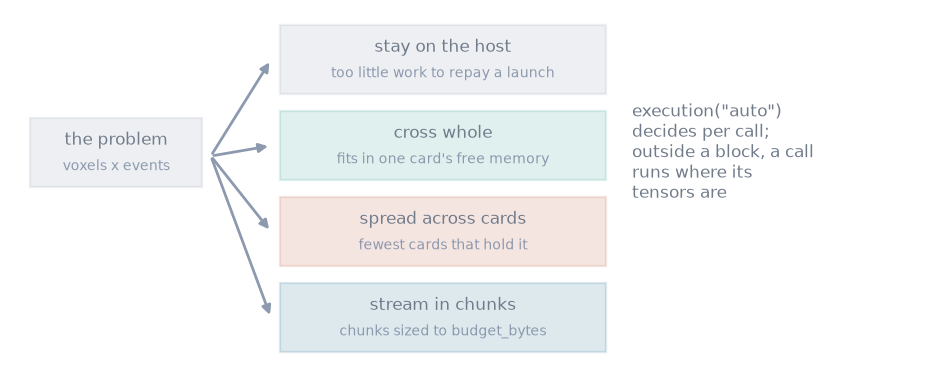

Execution#
TL;DR
A call runs where its tensors are;
execution()chooses the host, a GPU, several GPUs or streaming instead.A volume larger than a card’s free memory is streamed through it in chunks sized to a memory budget.
A simulator resolves its sequence structure on the first call and rebinds only the numbers on later calls.
You choose where a simulation, a dictionary match or a model-based reconstruction runs. Each simulator accepts scalar and tensor-valued inputs; tensor-valued inputs are simulated in parallel, over multiple CPU threads or on a GPU.
Capabilities#
Runs a call where its tensors are when no policy is in force.
Show code and tests
Code:
execution(). Test: without a block a call is left where it is (test_execution.py).Runs the host kernels over a pool of
torch.get_num_threads()threads, orBLOCHSIM_NUM_THREADS, with the same answer at any count.Show code and tests
Code:
blochsim/_threads.hpp. Tests: fused vjp matches the reference; fused vjp is bitwise deterministic (test_vjp.py).Decides per call under
execution("auto"): the host for small work, one card when it fits, otherwise the fewest cards that hold it, otherwise streaming.Show code and tests
Code:
execution(). Tests: work too small to repay a launch stays on the host; work that fits goes across in one piece; a volume larger than the card is streamed (test_execution.py).Runs on the host or on named devices whatever the size, under
execution("cpu")orexecution("cuda:0").Show code and tests
Code:
execution(). Tests: the host can be demanded whatever the size; a named device is used however small the work; a device resident call can be forced back to the host (test_execution.py).Streams on request (
stream=True), or demands residency and lets the allocator fail (stream=False).Show code and tests
Code:
execution(). Tests: streaming can be demanded for a volume that would fit; residency can be demanded for a volume that will not fit (test_execution.py).Sizes streamed chunks to
budget_bytes, by default each card’s free memory lessreserve_bytes.Show code and tests
Code:
execution(),offload(). Tests: the budget can be set outright; the reserve is left alone (test_execution.py); the device footprint stays inside the budget; a streamed volume matches the cpu run (test_offload.py).Returns the same signal, Jacobian and gradient on every route.
Show code and tests
Code:
execution(). Tests: every route gives the same answer (test_execution.py); a streamed real adjoint matches the cpu run (test_offload.py).Applies the same policy to dictionary matching, PERK and the model operator of a reconstruction.
Show code and tests
Code:
DictionaryMatcher,PERK,ModelOperator. Tests: a match is the same wherever it runs; a mapping is the same wherever it runs; a small budget really does split the volume (test_streaming.py); a policy changes where the work runs and nothing else (test_operator.py).Resolves the sequence structure once and rebinds the numbers on later calls (
resolve=True, the default).Show code and tests
Code:
Simulator. Tests: a resolved simulator stops packing; a resolved simulator answers what the plain one does; a layout the map cannot follow is refused (test_binding.py).
Division of responsibility#
Placement without a request. With no
execution()block and noexecution=, nothing moves a tensor between host and card.Multi-node execution. Several cards in one process are supported; several processes or machines are not.
Thresholds measured on your machine. The work below which the host is preferred is a fixed constant, not measured where it runs.
Method#


The four routes execution("auto") chooses between, per call, from the work
in the problem and the free memory each card reports.#
Route selection#
The policy is a context manager: it applies to every call inside the block,
nests, and is restored on exit, including after an exception. A simulator also
takes execution= at construction or per call. Work is counted in (voxel,
train, event) triples and compared with a crossover; past it, the device
footprint is compared with each card’s free memory less reserve_bytes
(512 MiB by default), which leaves room for other processes on a
reconstruction server.
Streaming#
Chunks of voxels are staged through pinned host memory, and the result returns
to the device the inputs came from. A smaller budget gives smaller chunks,
which fill the card less and pay more launch and transfer latency.
offload() names the devices and budget directly; its lanes=
lets one chunk transfer while another computes.
Structure and values#
The first call walks the layout and packs the event stream. Later calls rebuild only the durations, flip angles, phases and sample times, from an affine map of the arguments; where that map does not hold, the simulator packs every call instead. A rebound call agrees with a fresh packing to float32 round-off, since the same product is formed in a different order. What each declared tissue property costs is on Signal model; the packed buffers and the kernels are on Kernels.
Examples#
1. Your first simulation: a simulation forced onto the host.
Dictionary matching: a dictionary match under
execution().Echo train design for sharpness: a design loop over a resolved structure.